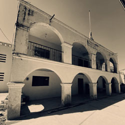

| PRINCIPAL HISTORIA CURIOSIDADES UBICACION CONTACTO PÁGINA EN MIXTECO |  |
San Pedro Llano Grande La comunidad de San Pedro Llano Grande posee raíces profundas vinculadas al antiguo señorío mixteca de Santa María Cuquila y al sitio arqueológico de Ñuu Kuiñi (Pueblo del Tigre). Tras la llegada de los frailes dominicos a la región de Tlaxiaco hacia 1548, el asentamiento se consolidó formalmente bajo el nombre de "San Pedro" debido a la evangelización, añadiendo "Llano Grande" por la inusual y extensa planicie que lo caracteriza dentro de la accidentada geografía de la Sierra Mixteca. Durante siglos, la localidad floreció gracias a la agricultura y el pastoreo, dependiendo administrativamente de Cuquila hasta que un decreto oficial el 29 de octubre de 1938 disolvió dicho municipio, integrando a San Pedro como agencia de la Heroica Ciudad de Tlaxiaco. En la actualidad, situada a casi 2,000 metros sobre el nivel del mar, la comunidad mantiene una sólida identidad cultural y autonomía interna a través de sus propias autoridades locales y la celebración de sus fiestas patronales en junio. Sus habitantes combinan el cultivo tradicional de maíz con el comercio hacia la cabecera municipal, destacando en los últimos años por su organización comunitaria para gestionar mejoras en su infraestructura vial y servicios básicos, logrando así preservar con orgullo su legado histórico y su lengua en el corazón de Oaxaca. |